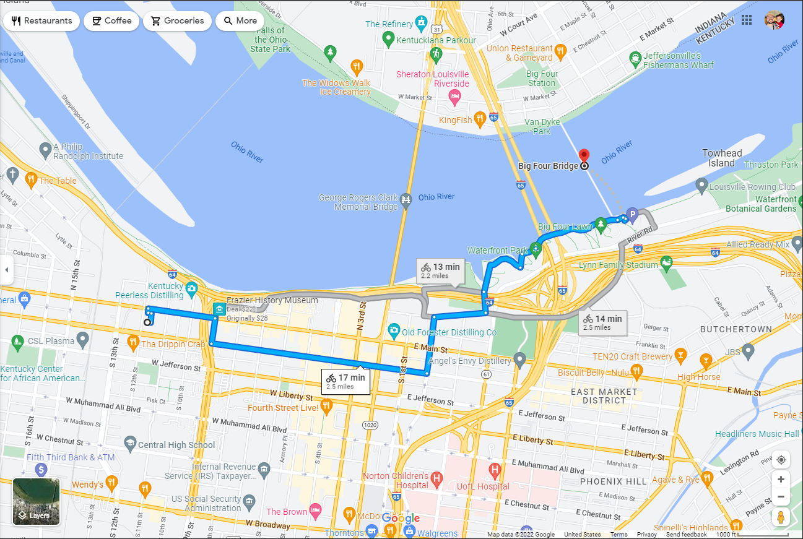

Bike Commuting: Part Four
July 15, 2022

My Second Test Ride
The same 5 miles as my previous practice ride! But this time, I had a bit of a detour and some issues on my ride. I'm realizing a lot of my apprehension begins when I can't ride in the bike lane because of obstacles.
Objects in the Bike Lane
A little break here, but this is Casey Niestat's video from 2011 that was incredible! I didn't realize how much this would make sense to me while I ride my bike, but it truly is just like this while you ride on the road.
Detour by the River
I took a different route to the Big Four Bridge today, and I took a seat watching the Ohio River! It was a nice break from the ride. I appreciated the benches that were available. When I was riding by there weren't that many people out and about, but on my way back there were a lot more people there.

Chain Issues
Here's where the issues begin. I don't know much about Bike Chains or Bike Gears, so I thought it would be good to practice. So I did.
The chain and the obstacles in my road were the worst part of this ride. The chain, I was attempting to move from Gear 2 back down to Gear 1 (I'm not actually sure if I'm saying that correctly) and it worked... or so I thought. Well, I'm in the middle of the road with a bus to my left and a stack of cars behind me; remember I had to be in the middle of the road because of construction in the bike lane.
Light turns green and I peddle to my hearts content and nothing. I'm an immovable object. I had to use gravity to get me to the sidewalk. And by this point in my ride, it's noon and there are literally hundreds of people out on Main Street of Louisville. So, I'm very embarassed and people are screaming and honking at me.
I make it to the side of the road and luckily I can figure out that the chain has gone too far to the left and slipped off. I was able to get that back in it's place, and I road the rest of the way with my head down and on the side walk. Luckily, I was only about a quarter of a mile to my destination.
Next Ride
What's next for me? More riding! I'm probably going to take the weekend off and leave the bike locked up in the closet at work. We have a busy weekend so there would be no point in bringing it home to just bring it back on Monday.
Time to Buy
Couple things I need to buy, and any suggestions of brands I should look at would be appreciated.. I haven't yet added that functionality into the site just yet so, I'll come back to that.
That's All Folks!
Hey, have a great weekend!